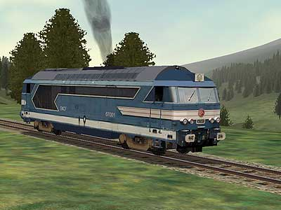
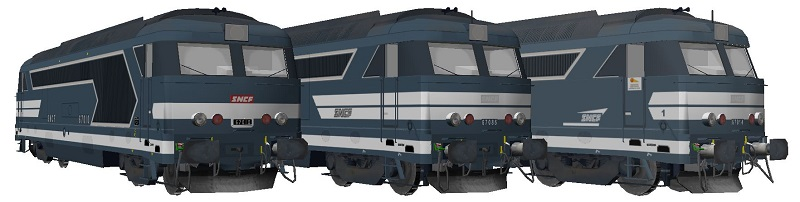
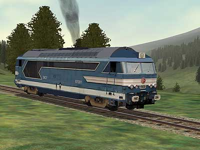
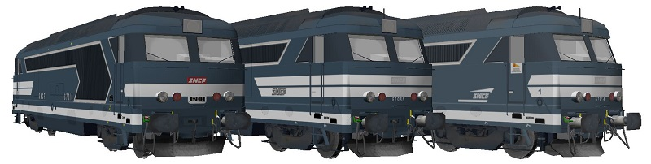

La BB 67000 version 
La BB 67001 pour MSTS a été réalisée par Pierre Gauriat.
ASW propose plusieurs redécorations de
BB 67000 en diverses livrées
réalisées par Hervé Droin sur la base des BB 67300 de Florian Barrallon.

Ferrovia - 09 Janvier 2004 - Mise à jour 1er Juin 2017
BB 67000
Suivant la mise en service des BB 66000 de puissance moyenne, les 67000 devaient dépasser les 2000 ch pour chasser efficacement les locomotives vapeur en tête des express. Les A1A-A1A 68000-68500 conçues en même temps, et plus puissantes, avaient pour objectif la traction de trains lourds.
Elles furent construites à 124 exemplaires de 1963 à 1968.
Malgré la bonne puissance massique de leur moteur Pielstick, le
devis de masse n'admettait pas l'ajout d'un circuit de chauffage. L'usage
d'un fourgon chaudière était donc nécessaire en hiver.
En quelques années, les BB 67000 cantonnèrent les locomotives vapeur aux trafics marchandises même si elles n'égalaient pas les plus véloces d'entre elles dont les 241 P. Supplantées par leurs cadettes BB 67300, plus puissantes et chauffantes, les BB 67000 furent elles-même limitées au Fret, condamnant les dernières vapeurs, et perdirent leur régime GV.
Les 67000 ont la particularité de ne pas mourir mais de muter. A la suite d'importants travaux de modernisation, la majorité des 67000 sont ainsi devenues des BB 67200, aptes à la circulation sur lignes à grande vitesse pour le secours des TGV.
Hormis les radiations de la 67075 et de la 67106 suite à accident, les amortissements n'ont débuté que fin 2002 pour les machines 67005, 15, 27, 49. 80 machines ont été transformées en BB 67200, 20 en 67300. Il ne restait donc que 26 machines dans la série au début 2004, toutes localisées en Avignon. La dernière fut radiée en décembre de la même année. Certaines machines radiées ont bénéficié des dernières transformations en 67200 en 2007. On pouvait les croiser dans le Sud-Est de la France et sur les chantiers de LGV.
Quelques données techniques
Constructeur : Brissonneau et Lotz
Chaîne de traction : Génératrice de courant continu,
moteurs de traction à collecteurs et double réduction mécanique
(PV : 90 km/h, GV : 135 km/h (inutilisée depuis la fin des prestations voyageurs))
Motorisation : moteur Diesel SEMT-Pielstick 16 PA 4-185
1 moteur de traction SW 9209 entièrement suspendu par bogie
Puissance totale : 1470 kW (moteur thermique), 1240 kW à la jante.
Longueur : 17,090 m
Masse : 80,725t
Aptitude à l'UM avec les BB 67200, A1A-A1A 68000 et 68500.
Dispositions particulières: les locs 67041, 42, 43, 50 et 36 disposaient de la puissance maximum du moteur. Soit 1765 kW.
Machine remarquable de la série
La 67036 n'était pas une 67000 comme les autres. Elle servit à l'expérimentation d'une chaîne de traction asynchrone triphasée. L'alternateur remplaçant la génératrice acceptait une puissance bien plus élevée, pesait moins lourd et fournissait du courant de chauffage à la rame tractée. Après une laborieuse phase d'essais, elle devint la BB 67291 en mai 1966. Ayant permit la mise au point des BB 67300, elle finit par devenir l'une d'entre elles en Janvier 1979 et prit le numéro BB 67390.
Pour plus d'info :
Les BB 67000 sur Trains de France
Fiche technique des BB 67000 de Florent Brisou
L'inventaire des BB 67000 sur Trains du Sud-Ouest
La BB 67000 version 
La BB 67001 pour MSTS a été réalisée par Pierre Gauriat.
ASW propose plusieurs redécorations de
BB 67000 en diverses livrées
réalisées par Hervé Droin sur la base des BB 67300 de Florian Barrallon.
